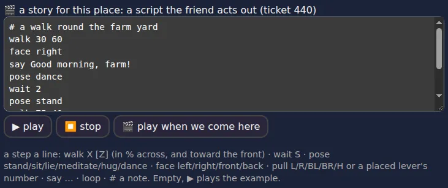
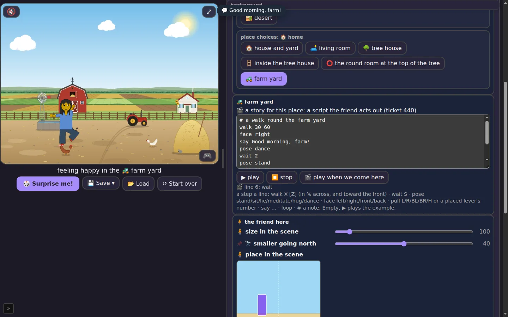
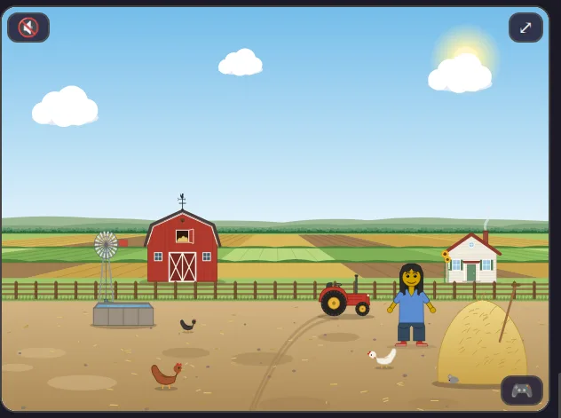
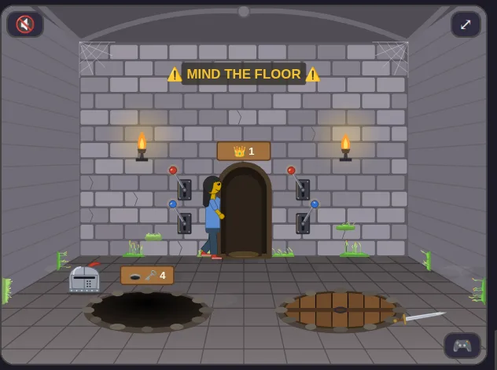
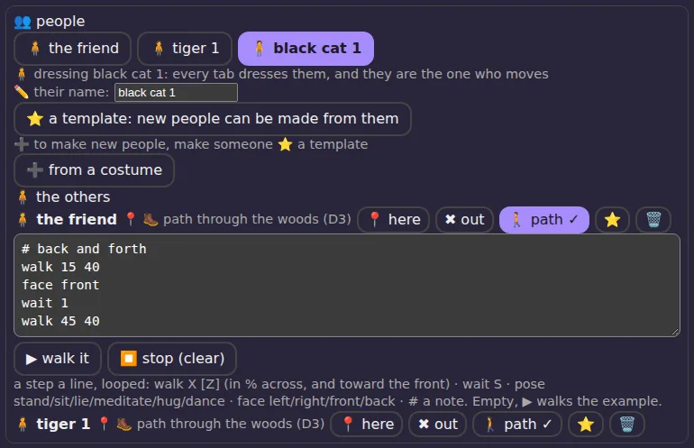
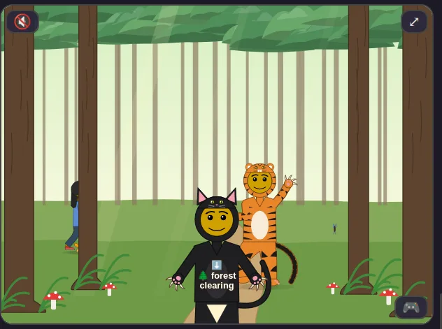
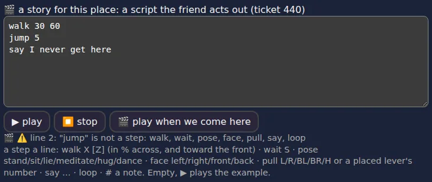

Dress Up reports · ^du_report(18) · 2026-10-24 · work in progress · about Messed Up Dress Up, a game made with M and N · ^ticket(600)
STORY SCRIPTS
DIRECTOR'S GUIDE

Matthew, 2026-10-24: “a new Zine and manual report --- for the kids to understand the story-script language, with examples, and more coloring pages.”
2 · WHERE THE STORY BOX IS
3 · THE SEVEN STEPS
4 · WHERE IS 30? WHERE IS 60?
5 · YOUR FIRST STORY
6 · PULLING LEVERS
7 · AGAIN AND AGAIN: LOOP
8 · EVERYONE CAN WALK 🚶
9 · OOPS! A WRONG LINE
10 · STORIES TO TRY
11 · THE QUICK CARD
12 · ABOUT THIS GUIDE
13 · PRINT IT: THE ZINE (PDF) 🖨️
1YOU ARE THE DIRECTOR
In a film, the director tells the actors what to do: walk over there, turn around, say your line, dance! In Messed Up Dress Up, you are the director, and your friend is the actor.
You write what happens as a story script: a list of steps, one step on each line. Your friend does them in order, from the top line to the bottom line.
walk 30 60 say Hello! pose dance
This story has three steps. Your friend walks, says “Hello!”, and dances. That's it! You just wrote your first story.
2WHERE THE STORY BOX IS
- Open the side panel and choose the 🏞️ Background tab.
- Find the 🎬 a story for this place box.
- Write your steps in it, one on each line.
- Press ▶ play. Your friend acts it out!

Three buttons:
- ▶ play starts the story from the top. If the box is empty, it plays an example story.
- ⏹ stop stops it.
- 🎬 play when we come here: when it is on, the story starts by itself every time you come into this place.
3THE SEVEN STEPS
A story knows seven steps. Each line starts with one of these words:
| step | what your friend does | try it |
|---|---|---|
walk | walks to a spot in the picture (chapter 4 says how spots work) | walk 30 60 |
wait | waits, a number of seconds | wait 2 |
pose | stands, sits, lies down, meditates, hugs, or dances | pose dance |
face | turns to look left, right, front (at you), or back | face right |
pull | walks to a lever and pulls it | pull L |
say | says some words, shown over the picture | say Hello! |
loop | goes back to the top and does it all again | loop |
The poses are: stand, sit, lie, meditate, hug and dance. Each dance is a surprise: your friend picks a different one every time.
A line that starts with # is a note for you. Your friend skips it.
# this is a note: my friend does not read it say Hi!
4WHERE IS 30? WHERE IS 60?
walk takes two numbers. The first says how far across the picture: 0 is the left edge, 50 the middle, 100 the right edge. The second says how far toward you: 0 is far away at the back, 100 is right at the front.
You can leave out the second number: walk 80 walks to 80 across and stays just as near or far as before.
5YOUR FIRST STORY
Go to the farm yard and type this story in the box:
# a walk round the farm yard walk 30 60 face right say Good morning, farm! pose dance wait 2 pose stand walk 75 40 face front say Time for a rest. pose sit
Press ▶ play. Your friend walks out, turns, says good morning, dances, walks to the back, and sits down for a rest.


Change one line and play it again. Make your friend say something else. Make them dance twice. It's your story!
6PULLING LEVERS
pull makes your friend walk to a lever and pull it, just like when you click a lever yourself.
- In the castle's trap room:
pull Landpull Rfor the red levers,pull BLandpull BRfor the blue ones. - In a tree room:
pull Hfor the trap door's lever. - Levers you put in a place yourself have numbers:
pull 1is the first one,pull 2the second.
walk 25 55 say Which lever opens the pit? pull L wait 1 face front say That one!

7AGAIN AND AGAIN: LOOP
Put loop at the end and the story starts over from the top, forever, until you press ⏹ stop or take over.
# the castle guard walk 20 50 face right wait 2 walk 80 50 face left wait 2 loop
8EVERYONE CAN WALK 🚶
Your friend isn't the only one who can move. The other people you made in the 👥 People tab can walk too, each on their own path.
- Put a person in a place with 📍 here.
- Press 🚶 path next to their name.
- Write their path in the box, with the same steps as a story:
walk,wait,pose,face. - Press ▶ walk it.

A path always goes round and round: when it gets to the end, it starts again by itself.

9OOPS! A WRONG LINE
If a line has a word the story doesn't know, the story stops at that line and tells you which line it is, and what it can do instead.
walk 30 60 jump 5 say I never get here

The story box said: 🎬 ⚠️ line 2: "jump" is not a step: walk, wait, pose, face, pull, say, loop
Things that go wrong, and how to fix them:
- A spelling slip, like
wlak: fix the word. - A missing number, like
walkon its own orwaitwith no seconds: add the number. - A pose it doesn't know, like
pose jump: use stand, sit, lie, meditate, hug or dance. - A lever that isn't here, like
pull Lin the farm yard: go to the trap room, or pull a lever you placed. - It stopped by itself? Maybe you clicked the picture. Press ▶ play again.
10STORIES TO TRY
The dance party
say Party time! pose dance wait 2 pose dance wait 2 pose dance wait 2 loop
Hide and seek
say I'll count to three! face back wait 3 face front say Ready or not! walk 10 40 walk 90 40 say Where are you?
The lazy day
walk 50 80 pose lie wait 5 pose sit say What a nice nap.
Goodnight
walk 40 50 face front say Goodnight, everyone! pose meditate
Which lever? (in the trap room)
say Let's try them all! pull L wait 2 pull R wait 2 pull L pull R say Back the way they were.
11THE QUICK CARD
walk X Z: to X across (0–100), Z toward you (0–100)
wait S: S seconds
pose …: stand, sit, lie, meditate, hug, dance
face …: left, right, front, back
pull …: L, R, BL, BR, H, or a lever's number
say …: words over the picture
loop: back to the top
# …: a note, skipped
▶ play · ⏹ stop · 🎬 play when we come here
🚶 paths: walk, wait, pose, face; always loop
12ABOUT THIS GUIDE
Every picture is of Messed Up Dress Up 0.0.424, as released, taken by tools/checks/storyguide600.mjs (kids-choice-games) on GitHub's computers, run 40107362158. The coloring pages at the end of the zine are the game's own drawings, with every color taken out.
The story box is ^ticket(440), the walking paths ^ticket(599). Made with M and N, who will be reading it, and coloring it.